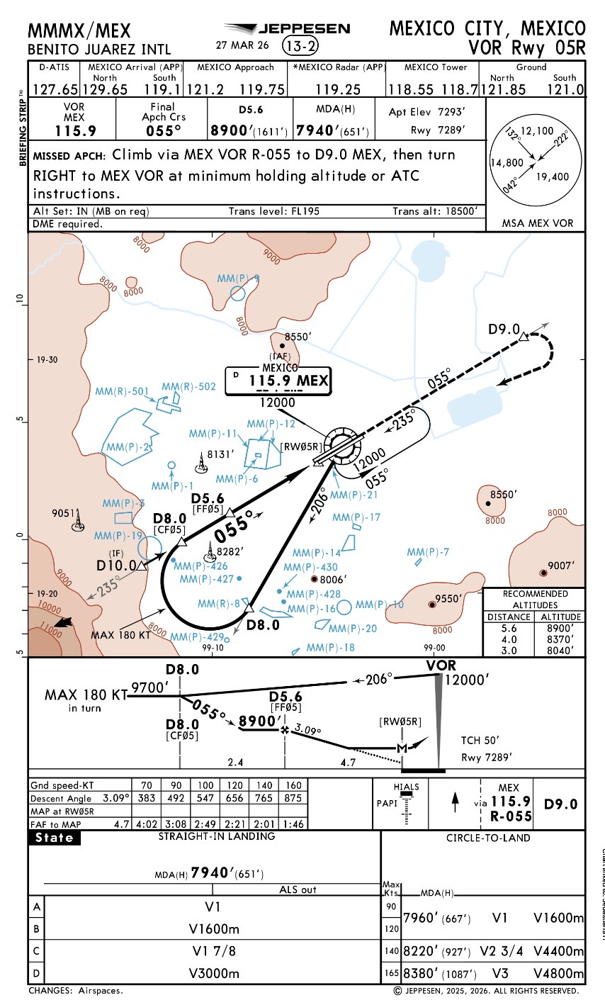
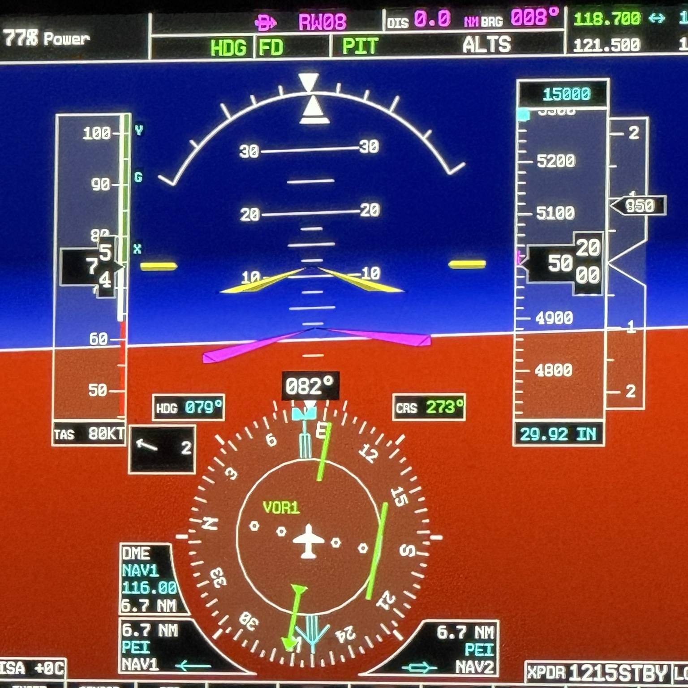
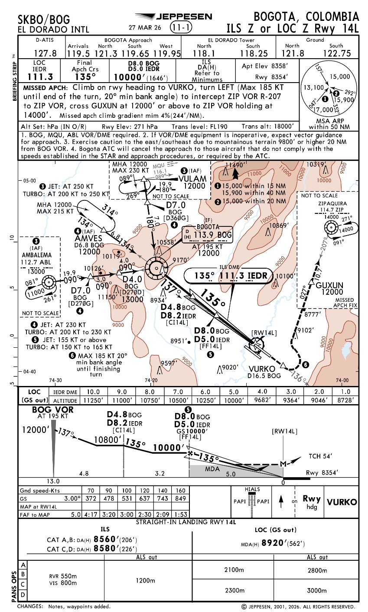
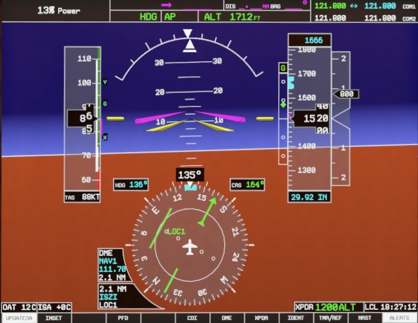

De la carta a la ejecución: VOR y LOC
Aprende a preparar, interceptar, descender, estabilizar y frustrar una aproximación convencional utilizando la carta Jeppesen y la presentación real del G1000.
Una aproximación se construye en seis fases
Navegación angular
Utiliza radiales y normalmente termina en mínimos MDA. La fuente se presenta como VOR1/VOR2.
Guiado lateral de alta sensibilidad
Utiliza el front course del localizador. La fuente se presenta como LOC1/LOC2 y no utiliza TO/FROM.
VOR y LOC no se interpretan de la misma forma
IAF, IF, FAF y MAP organizan la carga de trabajo
Ingreso
Alineación
Descenso final
Decisión / frustrada
Lee la carta VOR como un plan de acción

Antes de seguir el CDI, verbaliza la fuente

Selecciona un marcador
Comprueba fuente, curso, CDI y distancia antes de ejecutar cualquier descenso o interceptación.
Vuela el localizador usando sus propios mínimos

LOC1 debe aparecer en verde y con el front course correcto

Selecciona un marcador
Confirma LOC1, front course, identificación y desviación antes de interceptar.
El descenso comienza por autorización y geometría, no por intuición
La aproximación debe volverse más simple a medida que avanza
Curso controlado
CDI dentro de límites aceptables, tendencia entendida y correcciones pequeñas.
Perfil respetado
Altitudes de cruce, MDA y razón de descenso compatibles con la carta y el SOP.
Configuración oportuna
Velocidad, potencia, configuración y checklist preparados antes de que la carga aumente.
No persigas la aguja
Especialmente en LOC, la sensibilidad aumenta en final. Grandes correcciones tardías producen oscilaciones y pérdida de estabilidad.
Frustra cuando corresponda
Si no se cumplen los criterios de estabilización, se pierde la señal requerida o no existen referencias visuales al llegar al punto aplicable, ejecuta la frustrada.
La frustrada es una maniobra previamente preparada
Aplica los conceptos antes de la evaluación
Fuente VOR
La frecuencia está sintonizada, pero el HSI muestra GPS magenta.
LOC sin GS
Estás autorizado para LOC y aparece glideslope.
MDA
Llegas a MDA sin referencias visuales y antes del MAP.
Localizer sensible
El CDI oscila cerca de la pista.
Integra carta, fuente, descenso y frustrada
Aprobación: 80 % y preguntas críticas correctas.
1. Para volar una aproximación VOR en G1000, ¿qué debe verse como fuente activa?
2. ¿Qué diferencia al localizador del VOR?
3. ¿Qué representa el FAF?
4. En una carta que combina ILS y LOC, si vuelas LOC (GS out), ¿qué mínimos debes usar?
5. ¿Qué debes verificar antes de comenzar el descenso desde un fix?
6. ¿Qué significa MDA?
7. ¿Por qué se recomienda seleccionar el front course publicado en LOC?
8. Cerca de la pista, el CDI LOC se mueve rápidamente. ¿Qué técnica corresponde?
9. ¿Cuándo debe briefearse la aproximación frustrada?
10. ¿Cuál es el objetivo de una CDFA bien planificada?
FAA Instrument Procedures Handbook; FAA Aeronautical Information Manual; Instrument Flying Handbook; cartas Jeppesen utilizadas en el módulo; AFM/POH, suplemento de aviónica y SOP de la aeronave aplicable.